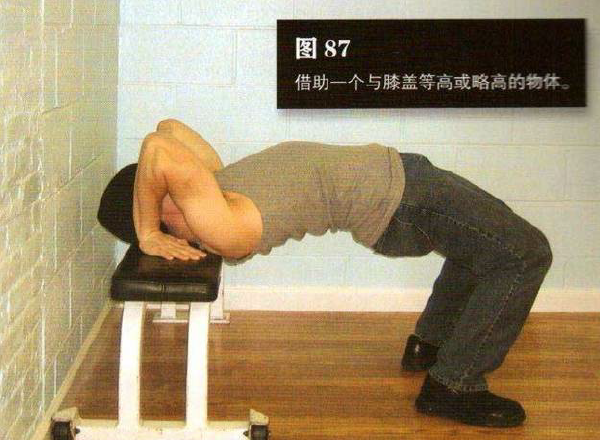
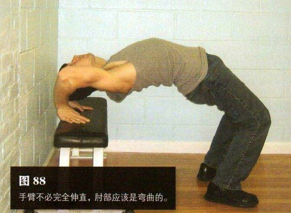

高低桥需要借助一个与膝盖等高或略高的物体产提监狱里，床铺是最好的选择。一般家庭里的床稍高一点，但也可以。坐在床的边缘，身体向后躺在床上，双脚平放地上，与肩同宽。身体往前挪，以便髋部离开床。双手放在头部两侧，手指指向脚
双手用力下压，肘部打开，推起髋部，同时背部弯起成弧形。继续平缓地尽力上推身体，至少让头部与身体完全离开床。手臂不必完全伸直，肘部应该是弯曲的。或许你只能将自己的身体推起几厘米，那就可以了。有控制地向后仰头，以便能看见身后的墙壁。
初级标准：1 组，8 次
中级标准：2 组，各 15 次
高级标准：3 组，各 30 次